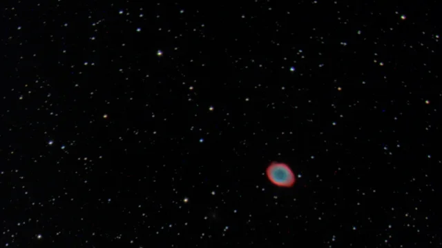
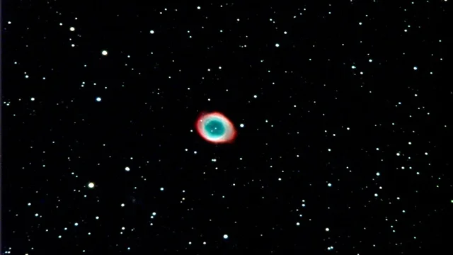

<div id="ajax-page" class="ajax-page-content">
  <div class="ajax-page-wrapper">
    <div class="ajax-page-nav">
      <div class="nav-item ajax-page-prev-next">
        <a class="ajax-page-load" href="#"><i class="lnr lnr-chevron-left"></i></a>
        <a class="ajax-page-load" href="#"><i class="lnr lnr-chevron-right"></i></a>
      </div>
      <div class="nav-item ajax-page-close-button">
        <a id="ajax-page-close-button" href="#"><i class="lnr lnr-cross"></i></a>
      </div>
    </div>

    <div class="ajax-page-title">
      <h1>From Noisy Photons to the Ring Nebula: M57 CCD Image Reduction</h1>
    </div>

    <div class="row">
      <div class="col-sm-12 col-md-12 portfolio-block">

        <!-- Side-by-side comparison (stacks on small screens) -->
        <div style="display:flex; gap:18px; justify-content:center; flex-wrap:wrap; margin-bottom: 26px;">
          <div style="flex: 1 1 320px; max-width: 520px; text-align: center;">
            
            <p style="margin-top: 10px; color: #666; font-size: 0.92em;">
              My reduced image (calibrated + aligned + combined)
            </p>
          </div>

          <div style="flex: 1 1 320px; max-width: 520px; text-align: center;">
            
            <p style="margin-top: 10px; color: #666; font-size: 0.92em;">
              Hubble reference (for visual comparison)
            </p>
          </div>
        </div>

        <hr style="border: none; border-top: 1px solid #eee; margin: 32px 0;">

        <h3 style="margin-bottom: 18px;">What this project is</h3>

        <p style="text-align: justify; line-height: 1.8; margin-bottom: 18px;">
          This project is an end-to-end CCD reduction pipeline that turns raw FITS frames into a scientifically calibrated RGB/LRGB image of M57. It includes the full calibration and “data cleaning for physics” stack—bias/dark/flat correction, registration, sky/background matching, channel scaling, and a controlled Lupton asinh stretch so the final image is both faithful and readable. 
        </p>

        <hr style="border: none; border-top: 1px solid #eee; margin: 32px 0;">

        <h3 style="margin-bottom: 18px;">Techincal difficulties I faced:</h3>

        <ul style="text-align: justify; line-height: 1.8; margin-top: 0; margin-bottom: 18px; padding-left: 22px;">
        <li style="margin-bottom: 10px;">
            <strong>Registration took way more patience than I expected.</strong>
            I’d nudge alignment and think it was fine, then I zoom in and see tiny red/blue fringes around stars making me say, “nope.” Chasing sub-pixel shifts was a lot of trial-and-error, and it was frustrating how one pixel could undo hours of work.
        </li>
        <li style="margin-bottom: 10px;">
            <strong>Background/sky matching was surprisingly touchy.</strong>
            Different frames came in with slightly different sky levels and gradients, and it kept throwing off the whole color balance. I remember hesitating a lot here because I didn’t want to “clean” so hard that I erased faint real structure in the nebula.
        </li>
        <li style="margin-bottom: 0;">
            <strong>Color correction and LRGB blending felt like walking a narrow line.</strong>
            I wanted the colors to be scientifically precise, but every “smart” correction had a catch. When I wenttoo aggressive, the background noise would blow up, too gentle and the nebula looked flat and lifeless. I ended up adding guardrails (noise floors, caps, blending) mostly because I wanted something that looked believable and didn’t fall apart the moment I stretched it.
        </li>
        </ul>

        <p style="text-align: justify; line-height: 1.8; margin-bottom: 0;">
          The process was a lesson in precision and humility. I quickly learned that real-world data is fragile; even a single pixel of misalignment creates false color artifacts that physics can't explain. While I am proud that the pipeline successfully recovered the distinct ionization shells of the nebula, comparing the result to Hubble is a stark reminder of the limits of ground-based imaging. The code did its job, but the atmospheric blurring and readout noise remind me that there is always room for better calibration frames and longer integration times. I want to thank <a href="https://www.kirklong.space/" target="_blank" rel="noopener noreferrer">Kirk Long</a> for motivating me to take up on this project, even though he may not realize it.
        </p>

        <hr style="border: none; border-top: 1px solid #eee; margin: 35px 0;">

        <!-- Project Details -->
        <h3 style="margin-bottom: 20px;">Project Details</h3>

        <p style="line-height: 1.8; margin-bottom: 12px;">
            <span style="color: #666;">Author:</span> Sajal Gupta
        </p>
        <p style="line-height: 1.8; margin-bottom: 12px;">
            <span style="color: #666;">Year:</span> 2021
        </p>
        <p style="line-height: 1.8; margin-bottom: 12px;">
            <span style="color: #666;">Tech:</span> Python, NumPy/Scipy/AstroPy, Matplotlib
        </p>
        <p style="line-height: 1.8; margin-bottom: 25px;">
            <span style="color: #666;">Features:</span> End-to-end CCD calibration (Bias/Dark/Flat), sub-pixel image registration, robust sky background subtraction, and LRGB composition using a flux-preserving Lupton asinh stretch for true-color visualization.
        </p>

        <!-- GitHub Link -->
        <div style="margin-top: 30px;">
            <a href="https://github.com/sajalgupta0422/M57-galaxy-CCD-image-reduction" target="_blank" style="display: inline-block; padding: 12px 28px; background: #8b7355; color: white; text-decoration: none; border-radius: 4px; font-size: 0.95em;">
                <i class="fab fa-github"></i> &nbsp;View Source Code
            </a>
        </div>

      </div>
    </div>
  </div>
</div>
<!-- End of path: portfolio-m57.html -->